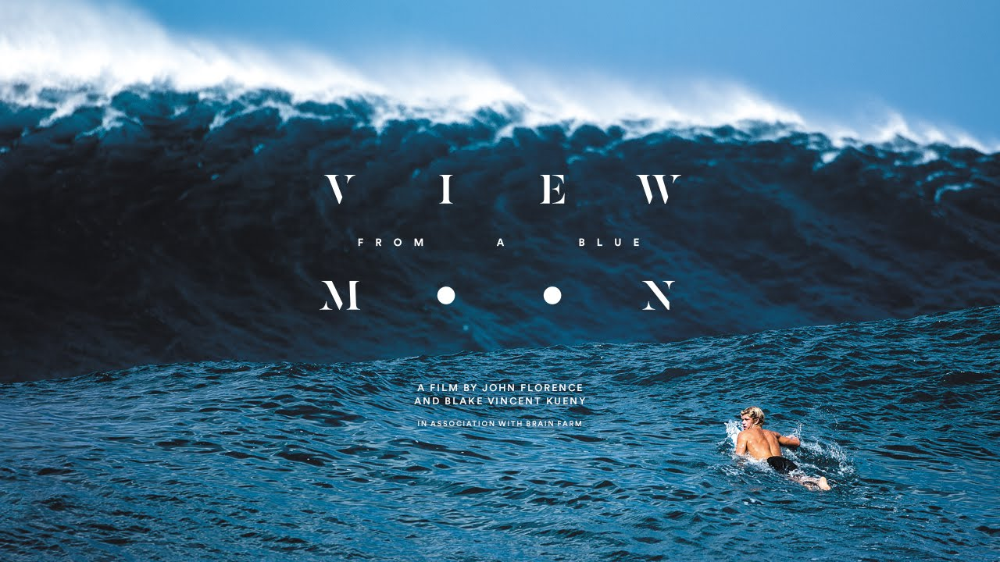

Drop <shadow-plyr> into any HTML, React, Vue, Angular or Next.js project. HLS streaming, subtitles, quality switching, chapters, and more — all encapsulated in Shadow DOM.

YouTube Support
Drop in any YouTube URL and get the same custom theme, seekbar, keyboard shortcuts, lazy loading and auto-thumbnail. No YouTube branding or native controls.
<!-- Full YouTube URL — auto-detected, lazy loads when visible, pauses when scrolled out --> <shadow-plyr src="https://www.youtube.com/watch?v=YE7VzlLtp-4" show-controls="true" show-center-play="true" lazy="true" pause-on-out-of-view="true" accent-color="#c27e44" ></shadow-plyr> <!-- Short URL works too --> <shadow-plyr src="https://youtu.be/YE7VzlLtp-4" show-controls="true"></shadow-plyr> <!-- Bare video ID needs explicit type --> <shadow-plyr src="YE7VzlLtp-4" type="youtube" show-controls="true"></shadow-plyr> <!-- Autoplay (muted required by browser policy) --> <shadow-plyr src="https://youtu.be/YE7VzlLtp-4" autoplay="true" muted="true" show-controls="true"></shadow-plyr>
youtu.be short URL · custom theme · lazy
Bare ID · type="youtube" · privacy-enhanced
Autoplay · muted · starts on scroll-in
Live Demo
Toggle options and watch the player update in real time.
💡 Enable Loop A→B, then press [ and ] while the player is focused to set loop points on the seekbar.
Capabilities
Built on native Web APIs — no framework lock-in, no bloated dependencies.
Manual multi-source quality selection via data-quality attributes, or automatic ABR through HLS.js adaptive streaming.
Multiple subtitle tracks via <track> elements with full CSS styling via ::cue and custom font/color support.
Hover the seekbar to preview frames. Works with WebVTT sprite sheets or live canvas capture from a hidden video clone.
Draggable, edge-snapping floating mini player. Stays visible while users scroll away. Fully keyboard accessible.
Full-width immersive theater layout toggleable via button or API. Emits theater-mode-change event for your own layout adjustments.
A single ⚙ gear button groups Quality, Speed and Subtitles into a slide-in sub-menu — keeping the controls bar clean.
Automatically registers OS / browser media session metadata — title, artist, artwork — so headphone buttons and lock screen controls work.
Add <track kind="chapters"> to display chapter markers on the seekbar and receive video-chapter-change events.
Enable analytics-events="true" to receive video-quartile CustomEvents at 25%, 50%, 75% and 100% playback milestones.
Use lazy="true" to defer video load until the player enters the viewport. pause-on-out-of-view auto-pauses when scrolled away.
All styles are scoped inside Shadow DOM. Host-page CSS cannot accidentally break the player. Customise via ::part() and CSS variables.
Works natively in any framework. Includes typed wrappers for React / Next.js and Vue 3 with full prop types and event callbacks.
Remembers each video's last-used playback speed independently via localStorage. Multiple players on one page each keep their own preference.
Add a branded text or image watermark at any corner or center. Supports custom opacity and an optional click-through link.
Pass a JSON array of videos. The player auto-advances on ended and shows Prev / Next buttons. Each item can have its own poster and title.
Mark a start and end point with [ / ] keys. Visual handles appear on the seekbar and playback loops between the two points.
ARIA live region announces play/pause/speed to screen readers. High contrast mode via prefers-contrast: more. Full keyboard navigation.
Get Started
One component, every stack.
<!-- 1. Load from CDN (no build step needed) --> <script type="importmap"> { "imports": { "shadow-plyr": "https://cdn.jsdelivr.net/npm/@elementmints/shadow-plyr/dist/index.js", "hls.js": "https://cdn.jsdelivr.net/npm/hls.js@1.6.15/dist/hls.mjs" }} </script> <script type="module">import 'shadow-plyr'</script> <!-- 2. Drop the element anywhere --> <shadow-plyr show-controls="true" show-seekbar="true" show-play-pause="true" show-volume="true" show-fullscreen="true" show-settings="true" show-quality="true" show-subtitles="true" accent-color="#6f8dff" analytics-events="true" > <source src="video-720p.mp4" type="video/mp4" data-quality="720"> <source src="video-1080p.mp4" type="video/mp4" data-quality="1080"> <track kind="subtitles" label="English" srclang="en" src="subs.en.vtt"> </shadow-plyr>
# Install npm install @elementmints/shadow-plyr npm install hls.js # optional — only needed for .m3u8 streams // main.ts / main.js — registers <shadow-plyr> globally import '@elementmints/shadow-plyr'; // Listen for custom events const player = document.querySelector('shadow-plyr'); player.addEventListener('video-ready', e => console.log('ready', e.detail)); player.addEventListener('video-quartile', e => console.log('quartile', e.detail.quartile)); // Programmatic API player.play(); player.pause(); player.seek(30); player.mute();
// app/VideoPlayer.tsx (Next.js App Router → add 'use client') 'use client'; import { ShadowPlyrReact } from '@elementmints/shadow-plyr/react'; export default function VideoPlayer() { return ( <ShadowPlyrReact showControls showSeekbar showPlayPause showVolume showFullscreen showSettings showQuality showSubtitles showThumbnails analyticsEvents accentColor="#6f8dff" mediaTitle="My Video" onVideoReady={e => console.log('ready', e.detail)} onVideoQuartile={e => trackAnalytics(e.detail.quartile)} > <source src="video.mp4" type="video/mp4" data-quality="1080" /> </ShadowPlyrReact> ); }
<!-- VideoPlayer.vue --> <template> <ShadowPlyrVue :show-controls="true" :show-seekbar="true" :show-settings="true" :show-quality="true" :analytics-events="true" accent-color="#6f8dff" @video-ready="onReady" @video-quartile="onQuartile" /> </template> <script setup lang="ts"> import { ShadowPlyrVue } from '@elementmints/shadow-plyr/vue'; const onReady = (e: CustomEvent) => console.log(e.detail); const onQuartile = (e: CustomEvent) => trackAnalytics(e.detail.quartile); </script>
// app.module.ts — allow custom elements import { NgModule, CUSTOM_ELEMENTS_SCHEMA } from '@angular/core'; import '@elementmints/shadow-plyr'; @NgModule({ schemas: [CUSTOM_ELEMENTS_SCHEMA] }) export class AppModule {} <!-- video.component.html --> <shadow-plyr show-controls="true" show-seekbar="true" show-settings="true" accent-color="#6f8dff" (video-ready)="onReady($event)" (video-quartile)="onQuartile($event)" ></shadow-plyr> // video.component.ts onReady(e: CustomEvent) { console.log('ready', e.detail); } onQuartile(e: CustomEvent) { trackAnalytics(e.detail.quartile); }